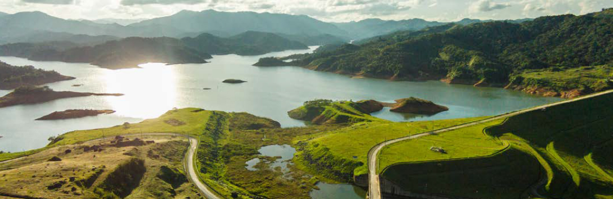
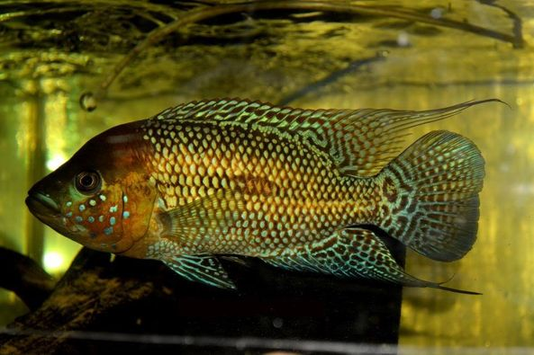

Nombre:
Embalse de San Lorenzo - Central hidroeléctrica Jaguas
Ubicación:
Está localizada en el departamento de Antioquia, sobre las hoyas de los
ríos Nare y Guatapé y a 117 km al oriente de Medellín. En jurisdicción,
limita con los municipios de San Rafael, San Roque, Alejandría, Concepción
y Santo Domingo.
Especies:

Nombre
Mojarra azul - Caquetaia umbrifera
Descripción
Es una especie de peces de la familia Cichlidae en el orden de los Perciformes.
Los machos pueden llegar alcanzar los 47,5 cm de longitud total.

Nombre
Large mouth black bass - Micropterus salmoides
Descripción
Es una especie de pez perciforme de la familia Centrarchidae.
Esta especie es originaria de Norteamérica.
Nombre
Mojarra azul - Caquetaia umbrifera
Descripción
Es una especie de peces de la familia Cichlidae en el orden de los Perciformes.
Los machos pueden llegar alcanzar los 47,5 cm de longitud total.